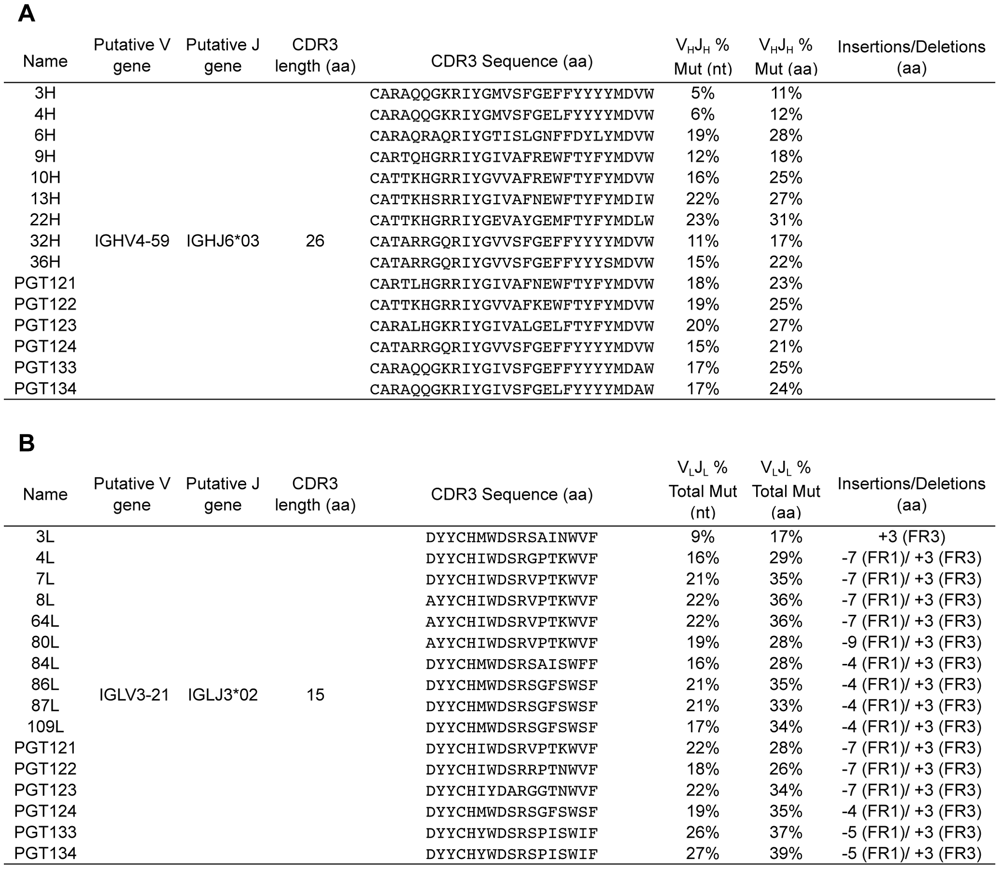
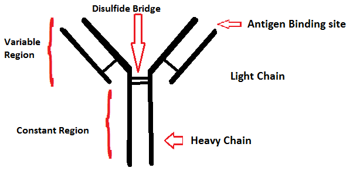
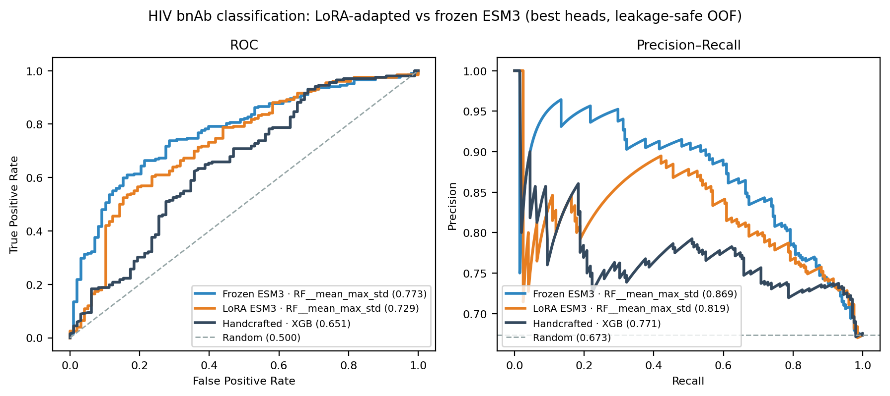
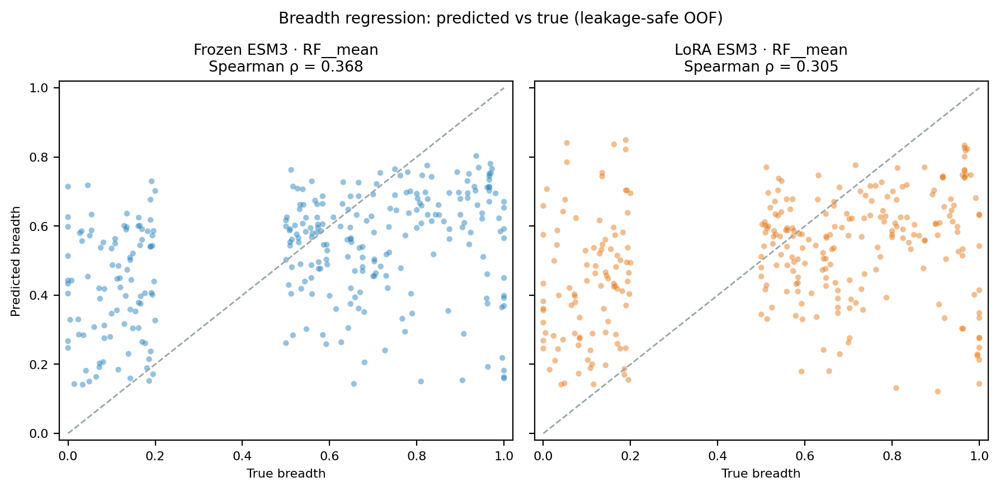
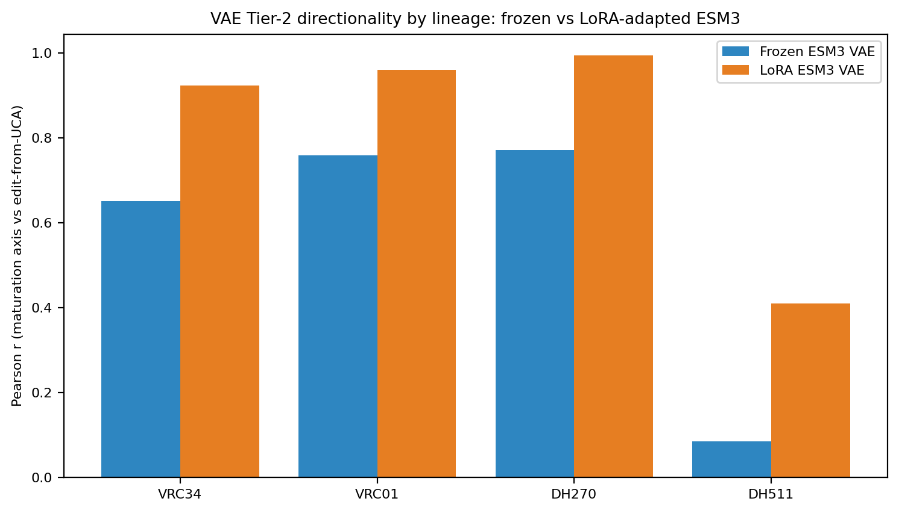
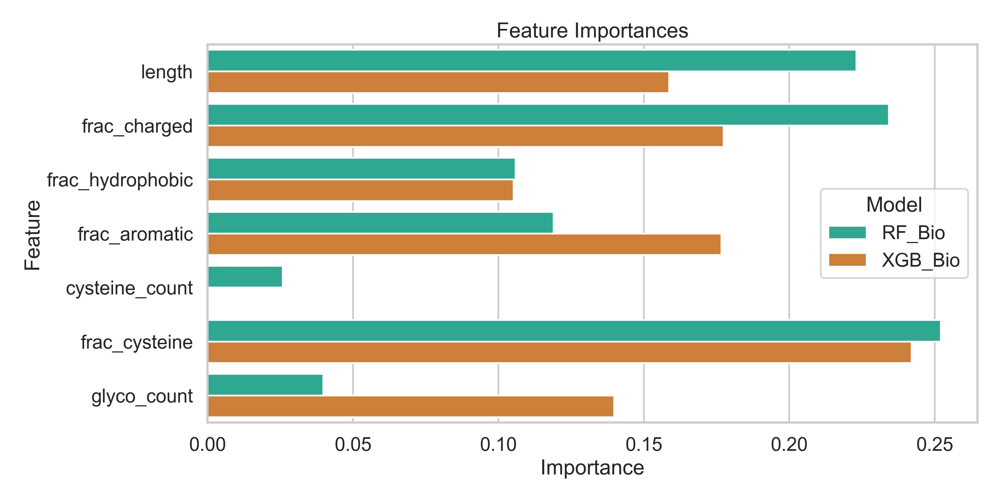
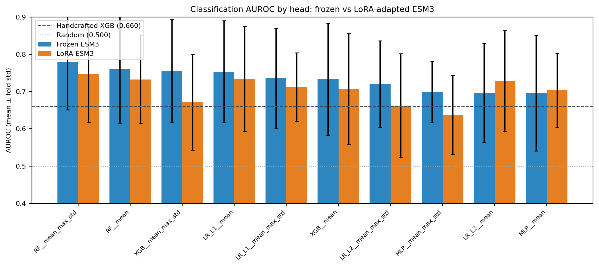
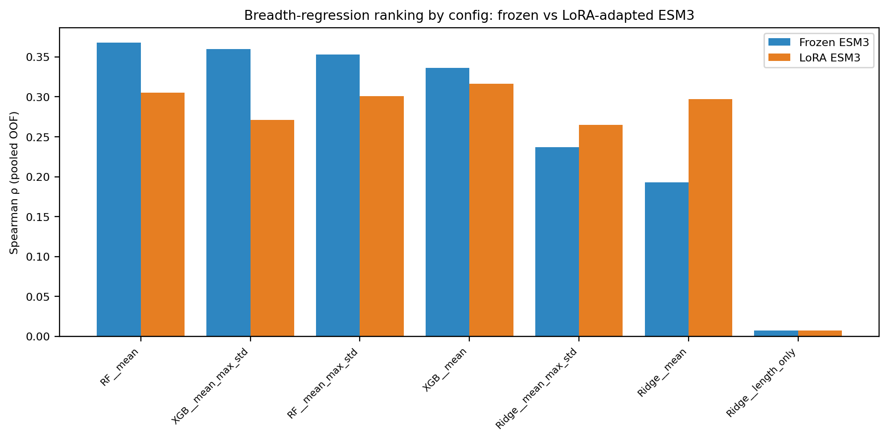

Evaluating Frozen and Antibody-Adapted ESM3 Representations for HIV Broadly Neutralizing Antibody Modeling
Abstract
We evaluate whether representations from the ESM3 protein foundation model transfer to sequence-only modeling of HIV broadly neutralizing antibodies (bnAbs), and whether domain adaptation via parameter-efficient fine-tuning alters that transfer. We partition heavy-chain sequences into lineage groups and evaluate frozen ESM3 and domain-adapted representations on classification and regression tasks. Frozen ESM3 representations effectively predict bnAb neutralization breadth and classify broad versus narrow neutralizers, outperforming handcrafted baseline features. Unsupervised domain adaptation on antibody repertoires does not yield significant downstream improvements. Representation interpolation along lineage maturation pathways shows that raw embedding-space interpolation is comparable to specialized variational autoencoder paths. These findings support frozen ESM3 as a viable exploratory representation for antibody modeling, while highlighting the importance of robust validation controls.
1. Introduction
HIV-1 broadly neutralizing antibodies (bnAbs) neutralize diverse viral variants by binding conserved envelope glycoprotein regions [1][2]. Unlike ordinary antibodies, bnAbs mature over years through somatic hypermutation, producing clonal lineages that share an unmutated common ancestor (UCA) but diverge in sequence and function (Figure 1).
Predicting neutralization breadth from variable heavy-chain ($V_H$) sequence alone is difficult because functional readouts depend on heterogeneous virus panels and inconsistent laboratory assays.
Protein language models learn contextual sequence representations from large unlabeled corpora. ESM3 reasons jointly over sequence, structure, and function [3][4]. We ask whether general-protein ESM3 embeddings support out-of-lineage bnAb modeling from heavy-chain sequence alone, and whether unsupervised adaptation on the Observed Antibody Space (OAS) [5] improves transfer.
Because antibody datasets contain somatically related variants, naive random splits can place members of the same clonal lineage in both training and validation folds. We implement metadata-derived lineage grouping with group-resampled uncertainty analysis on CATNAP [6]. Because the study compares multiple heads and pooling schemes on the same folds, cross-validation scores represent model-selection estimates rather than fully locked confirmatory performance.
We organize the study around three contributions: (1) metadata-derived lineage grouping and group-resampled uncertainty for classification and regression on CATNAP; (2) matched evaluation of sequence features, frozen ESM3, and OAS-tuned ESM3 (LoRA) under identical downstream folds and heads; and (3) a controlled analysis of VAE interpolation on residue-resolution embeddings, separating observations from unsupported manifold claims.

3. Data and Evaluation Protocol
3.1. CATNAP cohort and labels
We compile a dataset from CATNAP, which aggregates antibody sequences and quantitative viral neutralizations. The half-maximal inhibitory concentration ($\text{IC}_{50}$) measures potency against a specific viral isolate: lower values indicate higher antibody potency. We evaluate each antibody–virus pair as neutralized when $\text{IC}_{50} \leq 50\,\mu\mathrm{g/mL}$. Neutralization breadth $b_i$ for antibody $i$ is the fraction of tested measurements below that threshold:
We restrict analysis to antibodies tested against at least 20 virus strains. For binary classification, we assign broad ($1$) when $b_i \geq 0.50$ and narrow/weak ($0$) when $b_i \leq 0.20$, excluding the intermediate band to establish a distinct class boundary. We check $V_H$ completeness by requiring conserved cysteine residues and framework markers while retaining somatic mutations (Figure 2).

The final labeled set contains 300 unique $V_H$ sequences (202 broad, 98 weak), with lengths 116–146 amino acids. For continuous-breadth regression, we predict $b_i$ directly for these 300 assays.
3.2. Lineage grouping and split
To prevent leakage of closely related sequences, we group antibodies by lineage using a hierarchical sort: CATNAP clonal-lineage metadata (216 antibodies), shared-donor metadata (70), single-linkage clustering at $\geq 80\%$ Levenshtein identity (2), and singletons (12), yielding 113 unique group IDs. Tiers are not cross-merged, leaving nine near-duplicate pairs across group boundaries that we audit but intentionally do not merge (Appendix, Table A4). Across 774 in-group pairs, median sequence identity is $0.779$ (IQR $0.704$–$0.885$); across 44,076 out-group pairs, median identity is $0.424$ (IQR $0.377$–$0.504$).
Both tasks use a single 5-fold StratifiedGroupKFold split so all antibodies in a
lineage group remain in train or validation while stratifying the broad-vs-narrow ratio per fold.
3.3. Metrics, selection, and uncertainty
Classification metrics are AUROC and AUPRC (average precision). AUROC measures the probability that a random positive ranks above a random negative; AUPRC evaluates precision–recall trade-offs under class imbalance. Regression metrics are Pearson $r$, Spearman $\rho$, and $R^2$.
Configuration selection uses mean validation-fold score (mean AUROC or mean Spearman $\rho$). Primary reporting uses pooled out-of-fold predictions from all folds. We estimate 95% intervals with 10,000 bootstrap draws resampling complete lineage groups. Paired deltas resample groups and compute metric differences on aligned OOF predictions. These intervals quantify sensitivity to lineage composition but do not correct for configuration-selection bias.
3.4. OAS adaptation corpus
Domain adaptation uses 219,837 globally deduplicated human heavy-chain sequences from 11 OAS data units (108,675 clonotypes); the largest unit contributes 20,000 sequences (9.1%). Systematically 5$'$-truncated data units are excluded. A clonotype-aware split yields 198,130 training and 21,707 validation sequences. OAS supplies adaptation data only—we neither label OAS sequences as HIV bnAbs nor include them in downstream test folds [5].
3.5. Lineage-interpolation cohort
The interpolation track unions the 300 labeled antibodies with 11 trajectory rows; four trajectory IDs already occur in the labeled cohort, yielding 307 unique sequences and 39,129 residue embeddings. VAE training uses 214 antibodies (27,490 residues), group-held validation uses 46 antibodies (5,738 residues), and complete VRC34, VRC01, DH270, and DH511 lineages form the holdout set (47 antibodies; 5,901 residues).
4. Representations and Models
4.1. Handcrafted baseline
Seven features per $V_H$ sequence: length; charged, hydrophobic, aromatic, and cysteine fractions; cysteine count; and $N$-glycosylation-motif count. We evaluate logistic regression, random forest [25], and XGBoost [18]. XGBoost is the selected baseline; we retain length-only logistic regression as a diagnostic.
4.2. Frozen ESM3 and downstream heads
Residue embeddings from frozen esm3-sm-open-v1 (1.4B parameters) [4] yield $L \times 1536$ matrices per
sequence (excluding BOS/EOS tokens). Pooling schemes are (1) mean pooling (1536-d) and (2)
concatenated mean, max, and standard deviation (4608-d). Scaling and PCA fit strictly inside each
training fold. All downstream heads use scikit-learn [26].
Classification candidates are L1/L2 logistic regression (SAGA solver [27] for L1), random forest, XGBoost, and a PCA-50 multilayer perceptron, plus a separately trained additive attention-pooling classifier. Regression candidates are Ridge, random forest, and XGBoost, with a length-only Ridge floor. Appendix Table A1 lists hyperparameters.
4.3. OAS LoRA adaptation
LoRA [16] freezes base weights and injects rank-16 adapters ($\alpha=32$, dropout 0.05), training 18,874,368 parameters (1.33%). Adaptation uses masked language modeling [19] on 15% corrupted tokens for one epoch with AdamW [20] (effective batch 32). Clonotype-held-out validation reaches loss $0.5025$ (perplexity $1.653$). Adapters merge into the base model before embedding extraction.
4.4. Per-residue VAE and controls
A VAE compresses 1536-d residue embeddings to 32-d latents (hidden 512/256, dropout 0.1, $\beta=0.005$ KL with 25-epoch warmup). We train separate frozen- and LoRA-embedding VAEs for 300 epochs. Endpoints align globally with Needleman–Wunsch [21] via Biopython [28]. For UCA latent $z_u$ and mature latent $z_m$, the VAE path is $z(\alpha)=(1-\alpha)z_u+\alpha z_m$, $\alpha\in[0,1]$.
We compare three embedding-space paths: decoded VAE latent interpolation; straight lines between
VAE-reconstructed endpoints (sl_rec); and straight lines between raw ESM3 endpoints
(sl_raw). Four evaluations cover inferred-intermediate search (11-step VRC34 path vs
seven inferred intermediates), maturation midpoint tests on four ordered triples, maturation
correlation analysis on four held-out lineages, and a latent geometry check on 75 sampled triples
across 15 lineages. Maturation correlation lacks a raw-embedding control and cannot isolate a VAE
or LoRA effect.
5. Results
5.1. Classification
Table 1 separates configuration-selection score (mean over folds) from pooled OOF estimates and group-bootstrap intervals. Frozen ESM3 improves pooled AUROC from $0.625$ to $0.746$ and pooled AUPRC from $0.742$ to $0.859$. On aligned predictions, paired frozen-minus-handcrafted differences are $+0.121$ AUROC ($[0.012, 0.228]$) and $+0.117$ AUPRC ($[0.028, 0.207]$). Intervals describe sensitivity to held-out lineage composition; they do not remove model-selection optimism.
LoRA's selected classifier reaches pooled AUROC $0.726$, below frozen by $-0.020$ (paired interval $[-0.096, 0.059]$). The corresponding AUPRC difference is $-0.031$ ($[-0.075, 0.024]$). These data do not establish downstream classification improvement from the single adaptation run.
The learned attention pool reaches mean-fold AUROC $0.702 \pm 0.100$, below the best fixed-pooling frozen model—a negative capacity result on this cohort, not evidence that learned pooling is generally inferior.
| Representation | Fold AUROC | Pooled AUROC | 95% interval |
|---|---|---|---|
| Handcrafted XGB | $0.644 \pm 0.086$ | 0.625 | [0.518, 0.744] |
| Frozen ESM3 | $0.761 \pm 0.131$ | 0.746 | [0.653, 0.837] |
| OAS LoRA ESM3 | $0.745 \pm 0.140$ | 0.726 | [0.626, 0.825] |
Table 1: Broad-vs-narrow classification. Intervals from lineage-group bootstrap.

5.2. Continuous breadth regression
Regression uses the same 300 threshold-selected antibodies. Frozen ESM3 reaches pooled Spearman $\rho = 0.366$ ($[0.126, 0.585]$), Pearson $r = 0.357$ ($[0.129, 0.580]$), and $R^2 = 0.114$ ($[-0.134, 0.313]$). The length-only Spearman floor is $0.004$ (Table 2). The selected representation contains ranking information, while absolute breadth predictions remain weak.
Mean-fold Spearman selection chooses LoRA random forest with mean pooling (pooled $\rho = 0.319$, $[0.059, 0.561]$). Paired LoRA-minus-frozen Spearman difference is $-0.047$ ($[-0.169, 0.064]$).
| Representation | Fold $\rho$ | Pooled $\rho$ | 95% interval |
|---|---|---|---|
| Frozen ESM3 | $0.380 \pm 0.312$ | 0.366 | [0.126, 0.585] |
| OAS LoRA ESM3 | $0.357 \pm 0.320$ | 0.319 | [0.059, 0.561] |
| Length only | — | 0.004 | — |
Table 2: Continuous breadth regression on pooled OOF predictions.

5.3. Reconstruction dominates VAE interpolation
The frozen-embedding VAE's best epoch has validation total loss $0.2599$, reconstruction loss
$0.1859$, and KL loss $14.80$. In the inferred-intermediate search (Table 3), raw ESM3
interpolation is closer than the VAE path for six of seven VRC34 inferred intermediates. Raw-line
MAE ranges from $8.51$ to $46.55$ (mean $20.77$); VAE-path MAE ranges from $34.54$ to $44.30$
(mean $37.47$). The exception is pI3' (raw $46.55$ vs VAE $44.30$). VAE-minus-sl_rec
differences average $-0.0069$, so the case study does not demonstrate meaningful curvature beyond
reconstruction.
Across four ordered VRC34 triples, raw-line midpoint MAE ranges from $8.24$ to $13.35$ versus VAE midpoint $35.20$ to $37.95$. The per-residue VAE bottleneck adds much more error than the midpoint-control differences under study.
| Inferred intermediate | VAE MAE | Raw-line MAE | VAE–rec. line |
|---|---|---|---|
pI1 | 37.96 | 8.51 | $-0.0000$ |
pI2 | 34.54 | 15.54 | $-0.0106$ |
pI2' | 38.28 | 32.48 | $-0.0196$ |
pI2 H33P | 35.29 | 17.14 | $-0.0179$ |
pI3 | 36.56 | 15.53 | $0.0000$ |
pI3' | 44.30 | 46.55 | $-0.0000$ |
pI4 | 35.38 | 9.63 | $-0.0000$ |
Table 3: Embedding-space MAE per dimension for VRC34 inferred intermediates.
5.4. LoRA and descriptive maturation directionality
For maturation correlation analysis, mean Pearson across four held-out lineages increases from $0.566$ (frozen VAE) to $0.822$ (LoRA VAE); mean Spearman from $0.384$ to $0.692$ (Figure 5). All four Pearson point estimates rise, but sensitivity intervals are wide for small lineages (e.g., DH511: $0.084 \rightarrow 0.409$, approximate LoRA interval $[-0.415, 0.865]$). This comparison is descriptive: two single-seed VAEs, one LoRA adapter, four lineages, no raw-embedding control.
The latent geometry check does not support interpolation evidence. Frozen VAE-minus-line MAE has mean $0.041$ (lineage-bootstrap interval $[-0.016, 0.109]$); LoRA mean $0.076$ (interval $[0.023, 0.142]$). Positive differences favor the reconstructed straight-line control.

6. Limitations
6.1. Exploratory model selection
We compare heads and pooling schemes on the same five grouped folds used for reporting. Selecting the best mean-fold configuration makes reported cross-validation performance optimistic due to hyperparameter and model-selection leak. Group-bootstrap intervals condition on the selected predictions and do not account for that selection process. Confirmatory evaluation requires nested grouped cross-validation or a fully locked external lineage holdout.
6.2. Cohort and target construction
The dataset is extremely small (300 sequences across 113 lineage groups), limiting statistical power and increasing overfitting risk. Only $V_H$ chains enter the models, neglecting light-chain ($V_L$) contributions and heavy–light pairing, which are biochemically critical for folding, stability, and neutralization breadth of many HIV-1 bnAbs. CATNAP narrow/weak antibodies are not equivalent to arbitrary non-bnAbs, and breadth is treated as an unweighted fraction over viral panels that vary in size and strain composition, without accounting for laboratory-specific or panel-level effects.
6.3. Grouping assumptions
Metadata-derived clonal lineage is the strongest available grouping key, but patient-level fallback groups may merge unrelated antibodies from the same donor, while singletons may mask unrecorded genetic relationships. The $\geq 80\%$ sequence-identity clustering heuristic supports separation in aggregate but cannot biologically prove complete developmental independence or rule out convergent evolution.
6.4. Adaptation and ESM3 constraints
LoRA domain adaptation was evaluated on a single dataset with one adapter configuration and one training run. Unsupervised adaptation on OAS may align representations toward general repertoire characteristics at the expense of somatic hypermutation features required for HIV-1 gp120/gp41 binding. ESM3's 1.4B-parameter scale introduces substantial computational overhead compared to simpler sequence models, and non-commercial licensing constraints limit downstream translation.
6.5. Interpolation and VAE constraints
The per-residue VAE treats residues as independent training examples and lacks an antibody-level encoder, ignoring sequence order, tertiary contacts, and global folding constraints—a severe biophysical simplification. The VAE failed our round-trip sequence decoding test-gate, so latent spaces cannot be reliably mapped back to constructible antibody sequences. Claims of sequence design or maturation interpolation are therefore speculative and physically unvalidated.
6.6. Reproducibility boundary
Our verification script validates pre-computed predictions and fails on cohort or alignment mismatches, but embedding caches and LoRA adapter weights come from external GPU clusters (Google Colab), and local verification does not recreate them. Saved artifacts reproduce the paper's claims, but a full local from-scratch retraining pipeline does not.
7. Conclusion
With lineage-grouped evaluation, frozen ESM3 representations improve over sequence features for CATNAP bnAb classification and show a modest increase in breadth performance. Absolute breadth prediction remains weak, indicating that heavy-chain sequence features alone—even from large protein language models—are insufficient for accurately modeling functional neutralization breadth. Unsupervised OAS LoRA adaptation did not improve downstream performance, suggesting that general-repertoire adaptation without target-specific supervision is insufficient for capturing somatic hypermutation patterns critical to HIV-1 neutralization.
To our knowledge the framing itself is novel: prior machine learning for HIV neutralization is predominantly virus-centric, scoring envelope resistance against a fixed antibody panel [9][22][10], and the closest antibody-centric breadth estimator infers breadth by molecular modeling onto a template antibody–antigen complex for a single epitope class [29]. We instead classify breadth directly from heavy-chain sequence (rather than from a modeled structure), epitope-agnostically, and under a lineage-held-out split. In that setting frozen ESM3 raises pooled AUROC from $0.625$ for a handcrafted biophysical baseline to $0.746$ (paired $+0.121$, group-bootstrap interval $[0.012, 0.228]$ excluding zero). Because no published benchmark shares this sequence-only, epitope-agnostic, lineage-held-out protocol, external AUROCs from random-split or virus-side tasks are not directly comparable; the meaningful baseline is our handcrafted-feature model, over which ESM3 shows a credible out-of-lineage gain.
The residue-level VAE interpolation analysis shows cautionary results. The per-residue VAE introduces substantial reconstruction error and fails to outperform simpler midpoint controls on the VRC34 lineage, likely due to limited bnAb data. We cannot draw strong conclusions on whether a VAE would meaningfully support generation or design of functional antibodies, or about VAE-space interpolation. While LoRA maturation correlations were higher, limited exploration of this tuning does not establish a causal adaptation effect.
Ultimately, our strongest contribution is methodological: lineage-aware splits, pooled-versus-fold validation reporting, and group-resampled uncertainty estimation change how these experiments should be interpreted. Because heavy-chain sequence alone proved insufficient for breadth, richer inputs such as paired heavy/light chains or explicit structure are worth exploring. VAE and adaptation analyses were limited primarily by labeled bnAb scarcity; larger cohorts and external validation on held-out lineages are needed before stronger conclusions can be drawn.
Appendix: Verification and Reproducibility Details
A.1. Candidate configurations
Table A1 records compared model families and fixed settings that materially affect interpretation. Figure A1 shows relative importances of handcrafted biophysical features in the baseline XGBoost classifier.

| Component | Candidates and fixed settings |
|---|---|
| Handcrafted classifier | LR, RF, XGB; seven features; RF/XGB depth 3; grouped five-fold CV |
| Frozen/LoRA classifier | L1/L2 LR, RF, XGB, MLP; mean or mean+max+std pooling; RF 300 trees/depth 3; XGB 200 trees/depth 3; MLP after PCA-50 |
| Attention classifier | Additive token attention; masked pooling, dropout 0.4, weight decay $10^{-2}$, 120 epochs |
| Frozen/LoRA regressor | Ridge, RF, XGB; mean or mean+max+std; RF 300 trees/depth 4; XGB 200 trees/depth 3 |
| OAS adaptation | One rank-16 LoRA run; $\alpha=32$, dropout 0.05, learning rate $10^{-4}$, one epoch, effective batch 32 |
| Per-residue VAE | One run per representation; 1536–512–256–32 encoder, mirrored decoder, dropout 0.1, $\beta=0.005$, 25-epoch warm-up, 300 epochs |
Table A1: Evaluated configurations. Selected cross-validation estimates remain exploratory because candidates share reporting folds.
A.2. Classification detail
Table A2 reconciles configuration-selection scores with pooled estimates from the main text.
| Representation | AUROC | AUPRC | Fold AUROC |
|---|---|---|---|
| Handcrafted XGB | 0.625 | 0.742 | $0.644 \pm 0.086$ |
| Frozen ESM3 XGB | 0.746 | 0.859 | $0.761 \pm 0.131$ |
| OAS LoRA ESM3 RF | 0.726 | 0.829 | $0.745 \pm 0.140$ |
Table A2: Classification metrics from aligned OOF predictions. Frozen XGB uses mean+max+std pooling; LoRA RF uses mean pooling.
A.3. Regression detail
| Representation | Spearman | Pearson | $R^2$ |
|---|---|---|---|
| Frozen ESM3 | 0.366 | 0.357 | 0.114 |
| OAS LoRA ESM3 | 0.319 | 0.310 | 0.036 |
| Length-only Ridge | 0.004 | $-0.059$ | $-0.046$ |
Table A3: Pooled OOF breadth-regression metrics.
A.4. Lineage-group leakage audit
The fallback grouping does not cross-merge tiers, so an antibody can resemble a member of a different group. Across all $\binom{300}{2}$ antibody pairs, nine span a group boundary while exceeding the $80\%$ Levenshtein-identity threshold (Table A4). Several involve inferred ancestral sequences or germline-reverted variants. They are deliberately not auto-merged; the count quantifies residual leakage after grouping.
| Antibody A | Antibody B | Group A | Group B | Id. |
|---|---|---|---|---|
| 1361 | D5_AR | patient:donor_Gorny2012 | cluster:10 | 0.811 |
| 1361 | PGZL1_gVmDmJ | patient:donor_Gorny2012 | lineage:PGZL1 | 0.839 |
| 1393A | D5_AR | patient:donor_Gorny2012 | cluster:10 | 0.803 |
| 1393A | PGZL1_gVmDmJ | patient:donor_Gorny2012 | lineage:PGZL1 | 0.855 |
| D5_AR | PGZL1_gVmDmJ | cluster:10 | lineage:PGZL1 | 0.815 |
| D5_FI | PGZL1_gVmDmJ | cluster:10 | lineage:PGZL1 | 0.806 |
| DH270 IA4 | VRC34-UCA | lineage:DH270 | lineage:VRC34 | 0.843 |
| DH270 UCA | VRC34-UCA | lineage:DH270 | lineage:VRC34 | 0.874 |
| PGDM1400 | PGDM1401 | lineage:PGDM1400 | patient:Donor 84 | 0.816 |
Table A4: Residual cross-group near-duplicates at $\geq 80\%$ Levenshtein identity.
A.5. Maturation correlation sensitivity
Small lineage sizes make Fisher-$z$ sensitivity intervals wide, especially for DH270 and DH511.
| Lineage | $n$ | Frozen $r$ [interval] | LoRA $r$ [interval] |
|---|---|---|---|
| VRC34 | 14 | 0.651 [0.184, 0.878] | 0.923 [0.768, 0.976] |
| VRC01 | 15 | 0.759 [0.404, 0.915] | 0.960 [0.881, 0.987] |
| DH270 | 6 | 0.771 [$-0.108$, 0.973] | 0.995 [0.950, 0.999] |
| DH511 | 8 | 0.084 [$-0.660$, 0.745] | 0.409 [$-0.415$, 0.865] |
Table A5: Descriptive Pearson correlations and Fisher-$z$ sensitivity intervals (not causal adaptation estimates).
A.6. Interpretation rules
The paper uses “interval” rather than “confidence interval” where resampling assumptions are especially limited. It avoids significance claims for VAE evaluations, does not treat non-overlap or interval sign as proof of a biological mechanism, and distinguishes direct observations from causal interpretation. Project history retains random-split and earlier name-grouped scores, but the main narrative excludes them because their prediction artifacts are not part of the verified canonical bundle.
A.7. Per-configuration discriminative results
Tables A6 and A7 report every fixed-pooling configuration compared for frozen and LoRA representations. All candidates reuse the same five reporting folds. Figures A2 and A3 show complete classification and regression sweeps.


| Configuration | Frozen AUROC | Frozen AUPRC | LoRA AUROC | LoRA AUPRC |
|---|---|---|---|---|
| XGB, mean+max+std | 0.761 | 0.878 | 0.668 | 0.794 |
| RF, mean+max+std | 0.759 | 0.874 | 0.740 | 0.855 |
| RF, mean | 0.759 | 0.875 | 0.745 | 0.858 |
| XGB, mean | 0.744 | 0.864 | 0.692 | 0.808 |
| L1 LR, mean+max+std | 0.732 | 0.858 | 0.667 | 0.805 |
| L2 LR, mean+max+std | 0.702 | 0.836 | 0.670 | 0.797 |
| L1 LR, mean | 0.697 | 0.827 | 0.741 | 0.834 |
| MLP, mean | 0.696 | 0.836 | 0.700 | 0.803 |
| L2 LR, mean | 0.677 | 0.822 | 0.723 | 0.833 |
| MLP, mean+max+std | 0.668 | 0.804 | 0.679 | 0.783 |
Table A6: Mean grouped-fold classification results. Bold marks the selected LoRA configuration; the selected frozen configuration is the first row.
| Configuration | Frozen fold $\rho$ | Frozen pooled $\rho$ | LoRA fold $\rho$ | LoRA pooled $\rho$ |
|---|---|---|---|---|
| RF, mean+max+std | 0.380 | 0.366 | 0.304 | 0.276 |
| RF, mean | 0.342 | 0.344 | 0.357 | 0.319 |
| XGB, mean+max+std | 0.341 | 0.354 | 0.292 | 0.272 |
| XGB, mean | 0.329 | 0.340 | 0.353 | 0.333 |
| Ridge, mean+max+std | 0.200 | 0.233 | 0.226 | 0.235 |
| Ridge, mean | 0.149 | 0.171 | 0.208 | 0.236 |
| Length-only Ridge | 0.155 | 0.004 | 0.155 | 0.004 |
Table A7: Regression Spearman correlations for all candidates. Bold marks mean-fold-selected configurations.
A.8. Paired resampling results
The verification script aligns predictions by antibody ID and resamples complete
group_id units. Table A8 gives paired differences from 10,000 valid resamples.
| Comparison | Metric | $\Delta$ | Low | High |
|---|---|---|---|---|
| Frozen–handcrafted | AUROC | 0.121 | 0.012 | 0.228 |
| Frozen–handcrafted | AUPRC | 0.117 | 0.028 | 0.207 |
| LoRA–frozen | AUROC | $-0.020$ | $-0.096$ | 0.059 |
| LoRA–frozen | AUPRC | $-0.031$ | $-0.075$ | 0.024 |
| LoRA–frozen | Spearman | $-0.047$ | $-0.169$ | 0.064 |
| LoRA–frozen | Pearson | $-0.047$ | $-0.173$ | 0.071 |
| LoRA–frozen | $R^2$ | $-0.078$ | $-0.228$ | 0.053 |
Table A8: Paired group-bootstrap differences for selected configurations.
A.9. VAE reconstruction and geometry summary
Frozen and LoRA VAEs use identical split membership and architecture but separate single runs. Best epochs are 299 (frozen) and 296 (LoRA); best validation total/reconstruction/KL losses are $0.2599/0.1859/14.80$ and $0.2834/0.2045/15.79$. Each run uses 27,490 training, 5,738 validation, and 5,901 held-out residue embeddings.
| Verified VAE quantity | Frozen | LoRA |
|---|---|---|
| Mean Pearson (maturation analysis) | 0.566 | 0.822 |
| Mean Spearman (maturation analysis) | 0.384 | 0.692 |
| Mean VAE–line MAE (geometry check) | 0.041 | 0.076 |
| Standard deviation (geometry check) | 0.274 | 0.237 |
| Median (geometry check) | 0.004 | 0.018 |
| Positive fraction (geometry check) | 0.573 | 0.693 |
| Lineage bootstrap low (geometry check) | $-0.016$ | 0.023 |
| Lineage bootstrap high (geometry check) | 0.109 | 0.142 |
Table A9: Descriptive VAE geometry summaries. Positive VAE–line differences favor the reconstructed straight-line control.
A.10. Reproducibility limits
The CPU verification script reconstructs claims from saved OOF predictions and evaluation artifacts; it does not retrain ESM3, the LoRA adapter, or either VAE. It verifies internal consistency and reported calculations, not bitwise reproducibility of GPU training runs. Group bootstrap resamples the observed 113 metadata-derived groups and does not represent a new external cohort. Confirmatory evidence would require a locked external lineage cohort or nested grouped model selection, repeated adapter and VAE seeds, and raw-embedding directionality controls for every lineage.
References
- [1] Devin Sok and Dennis R. Burton. Recent progress in broadly neutralizing antibodies to HIV. Nature Immunology, 19(11):1179–1188, 2018.
- [2] Yubin Liu et al. Broadly neutralizing antibodies for HIV-1: efficacies, challenges and opportunities. Emerging Microbes & Infections, 9(1):194–206, 2020.
- [3] Thomas Hayes et al. Simulating 500 million years of evolution with a language model. Science, 387(6736):850–858, 2025.
- [4] EvolutionaryScale Team. ESM3: open model weights (esm3-sm-open-v1). 2024.
- [5] Tobias H. Olsen et al. Observed Antibody Space. Protein Science, 31(1):141–146, 2022.
- [6] Hyejin Yoon et al. CATNAP: a tool to compile, analyze and tally neutralizing antibody panels. Nucleic Acids Research, 43(W1):W213–W219, 2015.
- [7] Nicole A. Doria-Rose et al. Developmental pathway for potent V1V2-directed HIV-neutralizing antibodies. Nature, 509:55–62, 2014.
- [8] Jinal N. Bhiman et al. New member of the V1V2-directed CAP256-VRC26 lineage. Journal of Virology, 90(1):76–91, 2016.
- [9] Vlad-Rareș Dănăilă et al. Machine learning in HIV neutralizing antibodies research—a systematic review. Artificial Intelligence in Medicine, 134:102429, 2022.
- [10] Mohammed El Anbari et al. BRAVE: predicting HIV-1 antibody resistance with protein language models. bioRxiv, 2025.
- [11] Zeming Lin et al. Evolutionary-scale prediction of atomic-level protein structure with a language model. Science, 379(6637):1123–1130, 2023.
- [12] Jeffrey A. Ruffolo et al. Deciphering antibody affinity maturation with language models. arXiv:2112.07782, 2021.
- [13] Tobias H. Olsen et al. AbLang: an antibody language model. Bioinformatics Advances, 2(1):vbac046, 2022.
- [14] Henry Kenlay et al. Large scale paired antibody language models. PLOS Computational Biology, 20(12):e1012646, 2024.
- [15] Nicolas Deutschmann et al. Do domain-specific protein language models outperform general models on immunology tasks? ImmunoInformatics, 14:100036, 2024.
- [16] Edward J. Hu et al. LoRA: Low-Rank Adaptation of Large Language Models. ICLR, 2022.
- [17] Diederik P. Kingma and Max Welling. Auto-Encoding Variational Bayes. ICLR, 2014.
- [18] Tianqi Chen and Carlos Guestrin. XGBoost: A scalable tree boosting system. KDD, 2016.
- [19] Jacob Devlin et al. BERT: Pre-training of Deep Bidirectional Transformers. NAACL, 2019.
- [20] Ilya Loshchilov and Frank Hutter. Decoupled weight decay regularization. ICLR, 2019.
- [21] Saul B. Needleman and Christian D. Wunsch. A general method applicable to the search for similarities in amino acid sequences. Journal of Molecular Biology, 48(3):443–453, 1970.
- [22] Aime Bienfait Igiraneza et al. Learning patterns of HIV-1 resistance to broadly neutralizing antibodies with reduced subtype bias using multi-task learning. PLOS Computational Biology, 20(11):e1012618, 2024.
- [23] Tobias H. Olsen et al. Addressing the antibody germline bias and its effect on language models for improved antibody design. Bioinformatics, 40(11):btae618, 2024.
- [24] Mamahdi14. Antibody Structure. Wikimedia Commons, 2016. CC BY-SA 4.0.
- [25] Leo Breiman. Random Forests. Machine Learning, 45(1):5–32, 2001.
- [26] F. Pedregosa et al. Scikit-learn: Machine Learning in Python. Journal of Machine Learning Research, 12:2825–2830, 2011.
- [27] Aaron Defazio, Francis Bach, and Simon Lacoste-Julien. SAGA: A Fast Incremental Gradient Method With Support for Non-Strongly Convex Composite Objectives. NeurIPS, 27:1646–1654, 2014.
- [28] Peter J. A. Cock et al. Biopython: freely available Python tools for computational molecular biology and bioinformatics. Bioinformatics, 25(11):1422–1423, 2009.
- [29] Simone Conti and Martin Karplus. Estimation of the breadth of CD4bs targeting HIV antibodies by molecular modeling and machine learning. PLOS Computational Biology, 15(4):e1006954, 2019.